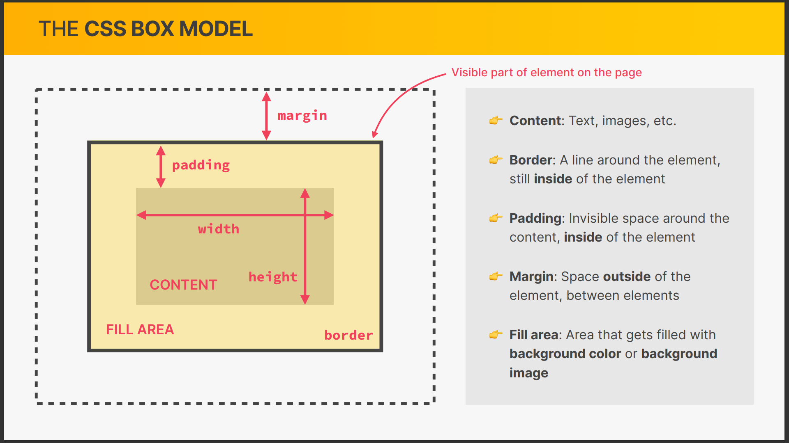
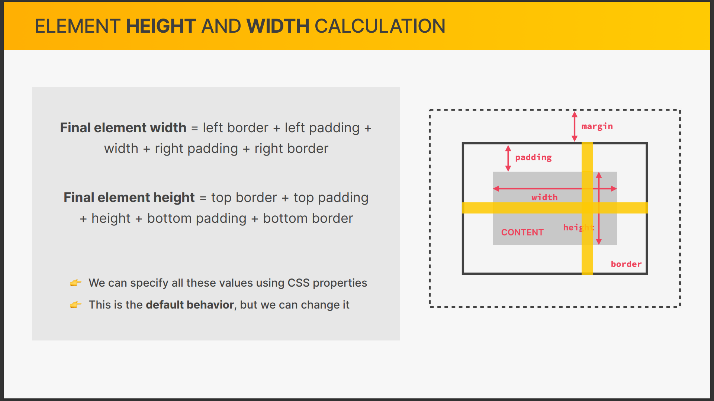

<h1 style="color: blue;">...</h1>
...
<h1 style="color: blue;">...</h1>
...
<!DOCTYPE html>
<html>
<head>
...
<style>
h1 {
color: blue;
}
</style>
</head>
<body>
<h1>...<h1>
</body>
</html>
h1 {
color: blue;
}
<!DOCTYPE html>
<html>
<head>
...
<link href="style.css" rel="stylesheet">
</head>
<body>
<h1>...<h1>
...
<h1>...<h1>
...
</body>
</html>
A design principle of separating a program into sections, with each section having a singular concern.
When Separation of Concern is adhered to strongly enough, sections of a program can be re-used, thereby reducing the amount of repetative code.
With 'Modular Design' in mind, the best to worst approach would be external, internal and then inline CSS.
colorfont-familyfont-sizefont-styleline-heighttext-aligntext-transformSerif means those short, spike-like edges of text.
The default font-size is 16px.
It's not about memorizing every property, since therea rea so many, rather get to know what is possible with CSS, and in time, you will memorize properties that you use a lot.
It reduces the repetativeness of writing CSS (DRY).
A list of selectors supplied for a CSS rule, whereby every match, for example:
h1, h2, h3, h4, p, li {
...
}
A string of selectors, separated by white-space, supplied for a CSS rule, for example:
p strong {
...
}
Descendent-selectors are incredibly useful, but if it is written as to reflect the HTML structure, it will lead to code that is harder to maintain in the future.
By adding class and id attributes to elements, class and ID selectors can be supplied for a CSS rule.
An ID may only appear once within the html code, whereas a class may appear any number of times.
It is a standard convention for classes and IDs comprising of multiple words to be strung together by using dashes.
If multiple CSS rules apply to the same element, then technically they all apply (more later).
#author {
...
}
<p id="author">...</p>
.author {
...
}
<p class="author">...</p>
<p class="author">...</p>
In the real world, using IDs often lead to more code refactoring, and bugs when the project develops further. This is mitigated by using classes over IDs, even if the CSS rule is only meant to be applied to a single element.
When multiple of the same style is applied to an element, the last one is taken (more later).
It is an industry standard to represent a color using the hexidecimal model, or rgba if transparency (alpha) is desired.
It is not reasonable to memorize or know many colors, instead, using a color picker is standard.
VSCode has a built-in color picker that can be accessed by typing any hexidecimal value (#fff, for example), and then clicking this hexidecimal value.
VSCode's color picker provides different models for values, which can be cycled through by clicking the value at the top of the color picker.
A short-hand property is a special property that can be used to define multiple properties in a single declaration.
It is not good practice to only use the element-selector for styling links. Links have a few states, that can be selected in CSS by use of specific pseudo-class selectors.
Link pseudo-classes are always written in a specific order:
It may be useful to think of the acronym LVHA.
Features within the Chrome Browser (and other browsers) that provide additional tools to help developers.
Whilst inspecting an element, all of the CSS rules that were applied to it are shown.
Each CSS rule provides their source.
The "User Agent Stylesheet" source is the default CSS for that element selector.
The state of a link element can be 'forced' by ticking the corresponding pseudo-class.
In VSCode, mousing over a CSS selector will show the "Selector Specificity".
Selector Specificity indicates the priority of the selector, highest to lowest priority read from left to right.
An inherited property is very easily overwritten by any rule which has a value for that same property.
Inheritance does not conflict with other selectors, rather, inheritance works by applying styles to all child elements.
By contrast, the universal selector applies to every element, and thus can conflict with other selectors.
The box model defines how elements are displayed, and sized on a webpage.
 Browsers add default styling to elements that may not be desirable, and an effecient way to remove some of this styling is to override it using the universal selector:
* {
margin: 0;
padding: 0;
}
Lists require spacing to show the numbering or bullets, so along with the global reset, margin should be added to the left side of them.
Use margin-top and margin-bottom to create vertical space. It is best practice to only
use one of these styles.
When two margins would occupy the same space, only the larger one of the two is effective.
widthheightA simple way to center the page would be to place the entire page's body into a container, then set that container's width to a constant value and set the left and right margin to auto:
<head>
...
<style>
.container {
width: 800px;
margin: 0 auto;
}
</style>
</head>
<body>
<div class="container">. . .</div>
</body>
There is no specific element that semantically represents this container, so <div> is fine